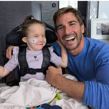
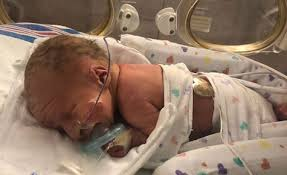

Processing the news: how this changes our daily life, our costs, and our family

Our family

The road ahead
Changes to Our Daily Routine
This has changed every aspect of our lives and it feels like everything revolves around making sure our child with Patau Syndrome is safe and getting what they need. One of us usually checks on them in the middle of the night and We take turns so we both get some sleep. We have therapy sessions in the morning. We have to plan meals and medications around therapy times. Sometimes therapy runs late and throws off the whole day. We had to change our work schedules to adjust for therapy. We monitor breathing and feeding. We keep logs of everything so doctors can help. sometimes on weekends we have extra appointments or need to prep for the week ahead.
Accommodations We Need to Make
We've started making a list of what our home and life need to look like:
- We needed to figure out where everything goes. After they got out of the NICU we needed a feeding pump, pulse oximeter, baby monitor, and a suction machine for their airways. We needed a space, with power outlets and room to move around, for all the equipment. We also needed a car with room for a special car seat, medical bag, and a portable oxygen tank.
- We needed to pad furniture edges, get safe floor surfaces in the main rooms, and clear paths through the house because of seizures.
- A specialist rotation — cardiologist, neurologist, ophthalmologist, ENT, and feeding therapist means a lot of appointments to coordinate
- Therapy began in the first couple months, so we had multiple appointments per week, which meant one of us needed to start working part time.
Estimated Medical Costs
We are checking our current insurance plan's NICU out-of-pocket maximum. Nevada has a Katie Beckett TEFRA program, which provides Medicaid coverage for kids. we are filing for SSI through the Social Security Administration. Our Family is also ready to help cover some costs.
Open-heart surgery without insurance ranges from under $30,000 to over $200,000 u. families with commercially insured children facing cardiac surgery have averaged around $3,000 out-of-pocket in the first year of life, Ongoing therapy and specialist visits run $5,000 to $15,000 per year as a conservative estimate, and that doesn't include adaptive equipment, home nursing, or prescription costs.
The Emotional Weight
I felt lots of grief at first. Then guilty for giving up even though there is a chance. Then love and a need to protect our child. We started counseling because this is going to be hard and we want as much help as we can get.
We also found other families online who are experiencing this too. They are not managing it perfectly either. That matters to me as I don't want to feel like I have to be superhuman. I just want to do the best I can for my child and my family.
Will We Need to Move?
Sunrise Children's Hospital in Las Vegas has the highest level of NICU care and complex cardiac care and ECMO service, for neonates in Nevada. Its pediatric cardiology program is one of the only hospitals near us that's able to do pediatric open heart surgery. The Children's Heart Center Nevada is in Las Vegas and Reno.
How Will Our Child Be Treated?
It is hard for kids who survive into early childhood. Our kid had facial features, like cleft lip, small eyes, and extra fingers. In public, people stare and sometimes make rude comments or ask inappropriate questions.
We will talk to other children about their sibling or friend the same way we talk about it ourselves. Children follow the emotional lead of adults. We want them to absorb normalcy instead.
Heredity — What This Means for Future Pregnancies
Trisomy 13 happens when chromosomes dont separate correctly during the formation of an egg or sperm. this is almost never inherited, and the risk in the future is about 1%.
We would test for it as soon as possible because knowing gives us time to prepare. It gave us time to prepare this time. Even though the preparation is hard, it is better than being surprised.